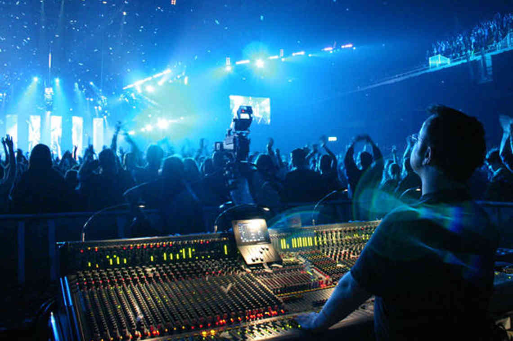
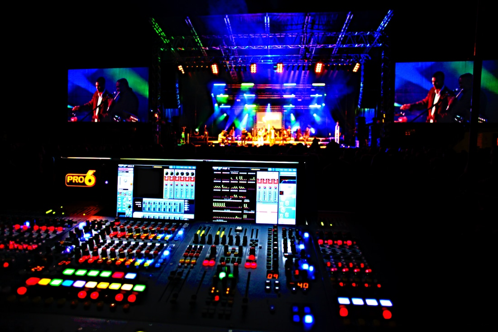

Henriksen Lyd- og Sceneproduksjon
Lyd- og sceneteknikk i Trondheim.
Hva kan jeg tilby?
Jeg tilbyr lydteknikk og rigging til konserter, konferanser og arrangementer. Les mer inne på CV/Portefølje!
Trenger du hjelp til planlegging, opprigg og utførelse av et prosjekt/arrangement, kontakt meg via kontaktskjema eller send meg en e-post!
Tidligere arbeid
Jeg har jobbet på ulike arrangementer med og hos flere selskaper. Se bildekarusellen under for eksempler (under utvikling).


